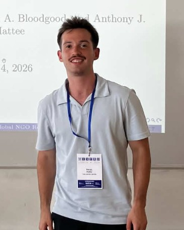

Raúl Alejandro Pérez Saucedo
Data scientist · AI and Legal Researcher, The Carter Center
I'm a data scientist working on artificial intelligence for public good, with a focus on civil society and civil freedoms. I work at the intersection of tech, legal research and public policy.
I'm interested in AI safety, in how people and AI systems work together, and in how language models can help people reason over public-interest information, from law and governance to environmental data, especially in Latin America. I currently build and evaluate human-in-the-loop systems for legal annotation.

Research
A GPT-5 workflow for coding civil society laws in five languages, evaluated against the distribution of human coder labels. A retrieval-based verification step did not change accuracy but raised evidence faithfulness from 0.69 to 0.95.
Compares a two-stage GPT pipeline (recall-oriented labeling, then retrieval-based verification) with a hybrid of LLM text splitting and a fine-tuned LEGAL-BERT, on freedom-of-expression laws from 62 countries.
Tests GPT-4o and GPT-5 on coding constitutional provisions on expression, association and assembly. A strict output-format prompt nearly doubled GPT-4o's accuracy but had no effect on GPT-5.
Compares freedom of expression trajectories in the two countries, combining de jure legal coding with de facto indicators to show how democratic backsliding can follow different institutional pathways.
Time-series regression models calibrating low-cost PM2.5 sensors against reference-grade monitors in one of Mexico's most industrialized regions.